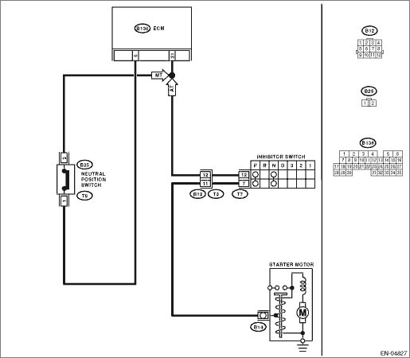

DTC DETECTING CONDITION:
Detected when two consecutive driving cycles with fault occur.
TROUBLE SYMPTOM:
Erroneous idling
CAUTION:
After repairing or replacing the defective part, perform the Clear Memory Mode  and Inspection Mode .
and Inspection Mode .
WIRING DIAGRAM:


| STEP | CHECK | YES | NO |
|
Are there any faults in the select cable? |
Repair or adjust the select cable. |
|
|
|
Is the voltage less than 1 V? |
Repair poor contact of the ECM connector. |
|
|
|
Is the resistance less than 1 Ω? |
|
Repair the harness and connector. NOTE: In this case, repair the following item: • Open circuit in harness between ECM and inhibitor switch connector • Poor contact of coupling connector |
|
|
Is the resistance less than 5 Ω? |
Replace the inhibitor switch. |
Repair the harness and connector. NOTE: In this case, repair the following item: • Open circuit in harness between inhibitor switch connector and starter motor ground line • Poor contact of coupling connector • Poor contact in starter motor connector • Poor contact in starter motor ground • Starter motor |